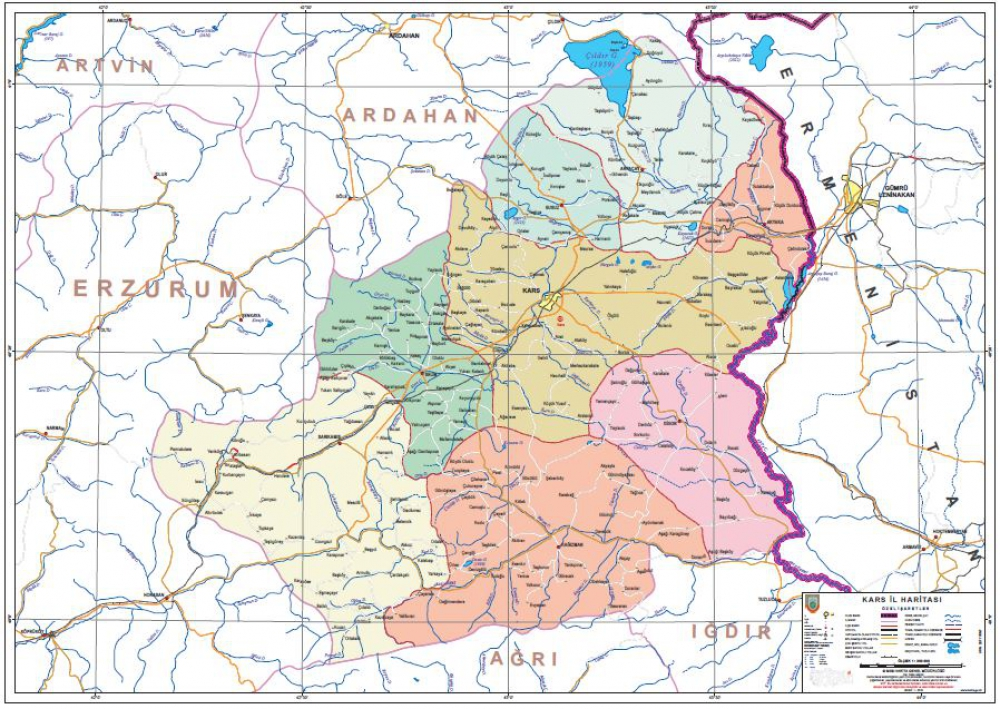

1881-1938, Minnetle...
1881-1938, Minnetle...
|
|
Kars, geçmişte Bagratlı Krallığı'na ve Cenub-u Garbi Kafkas Hükûmeti'ne (Güneybatı Kafkasya Cumhuriyeti) başkentlik yapmış bir sınır şehridir. Bu özelliği ile Türkiye'de herhangi bir ülkeye başkentlik yapmış ender şehirlerden birisidir. |
Kars merkez ilçesi, Doğu Anadolu Bölgesi'nin, Erzurum - Kars Bölümü'nde yer alır. Kuzeyinde; Susuz, Arpaçay ve Akyaka'yla, doğusunda; Ermenistan'la, güneyinde; Digor ve Kağızman'la, batısında ise Selim ve Erzurum sınırlarıyla çevrilidir. Rakımı ortalama 1768 metreyi bulan Kars arazisinin büyük bölümü yaylalardan oluşur. Akarsu vadileriyle yer yer parçalanan yörede yaylalar dalgalı düzlüklerden oluşur. Kars ilinde yer alan önemli yükseltiler olan Allahuekber Dağları, Kısır Dağı, Akbaba Dağı, Aladağ ve Aşağıdağ'ın bir kısmı merkez ilçe sınırları içerisindedir. Kars Çayı, kentin güneybatısından geçer. Kent aynı adlı ovanın üzerinde kurulmuştur.
Kars Mülk İdare İl Haritası
|
İklimi Kars'ta karasal iklim hakimdir. Kars yaylalarının Kars yöresine ait olan iklimi, yüksek ve denizden sıradağlarla ayrılmış olduğundan çok serttir. Kışları kurak, yazları ise yağışlı geçen ilde en kurak geçen mevsim olan kışın sıcaklıklar zaman zaman -39 °C'ye kadar düşer. Karla kaplı gün sayısı ortalama 120'den fazladır. Burada don vakalarına sıklıkla rastlanmaktadır. Bitki örtüsü Ormanların çok yer tutmadığı şehrin doğal bitki örtüsü bozkırdır. Kars coğrafyası, önemli ekolojik sistemlerden sayılan plato ve dağ çayırlarına ev sahipliği yapmaktadır. Burada 1250'ye yakın tohumlu bitki doğal olarak yetişir. Bu bitkilerden 100 adeti dünyada başka hiçbir yerde yetişmeyen nadir bitki türleridir. Kars adını taşıyan birçok bitki çeşidi vardır. Örnek olarak: lathyrus karsianus, festuka karsiana, allium karsianum, caucalis karsianum ve nonea karsensis bunlardan birkaçıdır. İlkbaharın gelmesi ile birlikte yörede kardelenler ve düğün çiçekleri açar. Ayrıca bahar aylarında yapılan tarla sürümlerinde ortaya çıkan lathyrus tuberosus yani koşkoz, yumrularının soyulması ile yenir. Bunun yanı sıra topuz dikeni, deli haşhaş, ısırgan otu, mantar, evelik, aş otu, kuşyemi ve yemlik gibi doğal bir şekilde yetişen bitkiler kaynatılarak yenir. Kars'ta sanayinin yeterince gelişmemesi olumsuzluk olarak değerlendirilse de toprak ve su kirlenmesinin pek yaşanmadığı bir olumlu özellik söz konusudur. |
| 1853-1856 tarihleri arasında Osmanlı ile Rusya arasında yapılan Kırım savaşı devam ederken Osmanlı İmparatorluğunu sıkıştırmak amacıyla 14 Haziran 1855 tarihinde Rus Orduları doğu sınırlarımızı aşarak Kars Şehrini muhasara etmeye başlamıştır. Müşir Mehmed Vasıf Paşa komutasındaki Osmanlı ordusu 135 gün süren Rus kuşatmasına karşı Kars halkı ile birlikte kahramanca bir savunma yaparak 29 Eylül 1855 günü Kars Zaferini kazanmıştır. Sultan Abdulmecid'in fermanıyla 3 yıl süreyle vergiden muaf tutulan Kars şehrine gazi unvanı verilmiştir. Naif Efendi tarafından madalya resimleri, Mr. Robertson tarafından madalya kalıbının hazırlandığı altın, gümüş ve bakırdan "Kars Zafer Madalyaları" yaptırılmıştır. Kars Zafer Madalyasının bir yüzünde Kars Kalesi, diğer yüzünde ise Sultan Abdulmecid Tuğrası bulunmaktadır. Madalyalar; 7 dirhem (13,4 gram) ağırlığında, 3,6 cm çapında altın, 29,7 gram gümüş ve 7 dirhem ağırlığında bakırdan 23,000 adet darp edilerek 1856 yılında Kars Zaferini kazanan askerlerimize ve şehit asker ailelerine dağıtılmıştır. Günümüzde İstanbul Arkeoloji Müzeleri Envanter Defterinin 328, envanter numarasının 89. sırasında altın, 90. sırasında gümüş ve 91. sırasında bakırdan yapılmış olan "Kars Zaferi Madalyaları" bu müzede bulunmaktadır. Kars'ın Rus Ordularına karşı kahramanca savunulması sonucunda; kazanılan 1855 Kars Zaferi nedeniyle, şehrimize verilen. "Kars Zafer Madalyası" aynı zamanda Anadolu’da bir şehre verilen ilk Gazilik Madalyasıdır. |